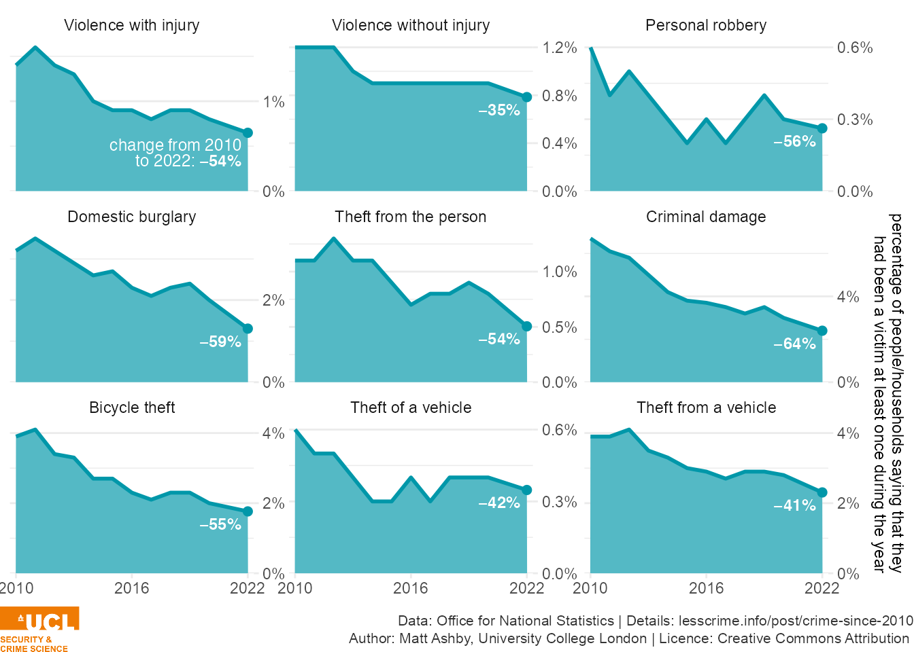
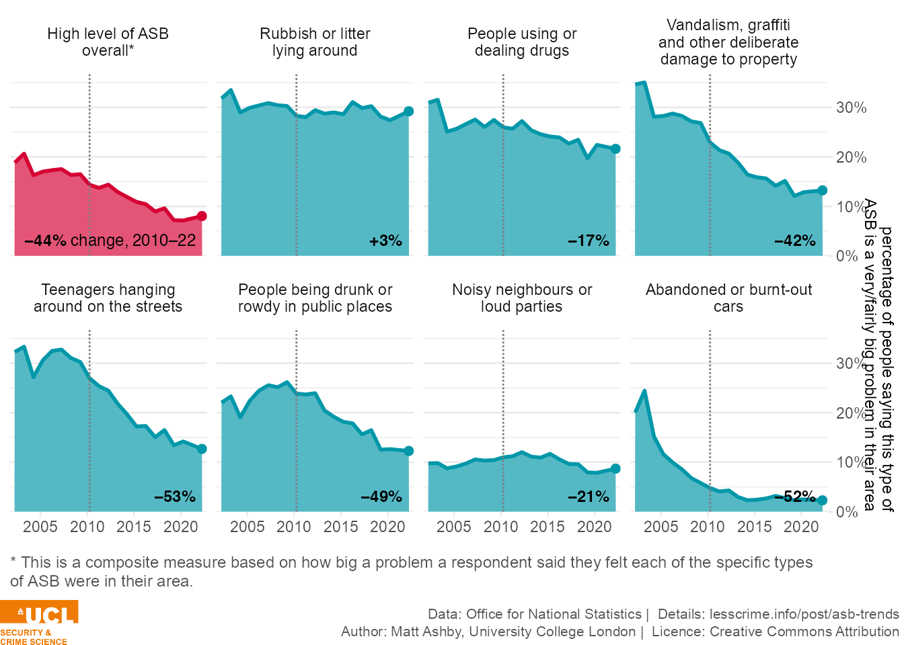
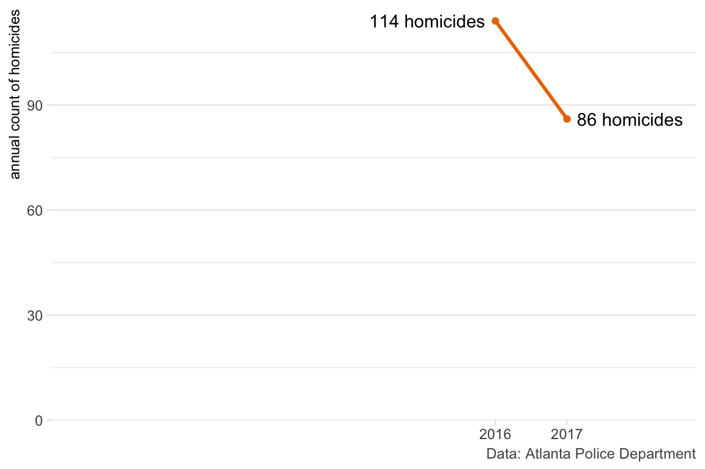

Matt Ashby
Home
Blog posts
Publications
Talks
Blog posts
Author
Matt Ashby
What happened to policing between 2010 and 2024?
8 Jul 2024

Rates of most common crimes have dropped since 2010
21 Apr 2023

Worry about many types of ASB is at its lowest level for 20 years
21 Apr 2023
Locator maps for Met Police BCUs
17 Mar 2023
Chart: Government proposals would mean pay for new police officers will have fallen by a quarter in 13 years
21 Feb 2023
Most police forces are still handling higher crime-related demand
18 Aug 2022
Adjusting for population change, the number of police officers in England and Wales now is less than in 31 of the past 40 years
29 Jul 2022
Chart: Cuts to officer numbers still being felt in some forces
27 Jul 2022
Chart: Over 13 years, basic police pay has fallen by 22% in real terms
19 Jul 2022
Increases in crime-related demand are hitting some forces harder than others
19 Jul 2021
Chart: Police cuts still being felt in most forces
30 Apr 2021
Chart: Typical rape investigation times doubled between 2012 and 2018
17 Mar 2021
Tutorial: How to stop hiding your research
5 Aug 2020

Why you can’t identify changes in crime by comparing this month to last month
13 May 2020
Chart: In serious cases, justice is often slow
9 Mar 2020
Chart: Some police forces are much more likely to prosecute violence
2 Mar 2020
Chart: No big changes in sentences after new police-assaults law
24 Feb 2020
Chart: England & Wales has highest per-capita prison population in Western Europe
17 Feb 2020
Chart: 73% of victim-based crime is not reported to police
10 Feb 2020
Chart: Homicides haven’t only increased in Britain
27 Jan 2020
Chart: Police crackdowns catch few drink drivers
20 Jan 2020
Chart: 10 times more people die in police collisions than in shootings
13 Jan 2020
Chart: What offences are people most often prosecuted for?
6 Jan 2020
Chart: One in ten of us is on the National DNA Database
16 Dec 2019
Chart: More than 1,400 football arrests each season
9 Dec 2019
Chart: Seizures of the most harmful drugs at UK borders are falling
2 Dec 2019
Chart: When police use force, they rarely cause injury
25 Nov 2019
Chart: Most prison sentences are for violent crimes
18 Nov 2019
Chart: Young offenders are more likely to re-offend than adults
4 Nov 2019
Chart: Sentences for knife carrying are increasing, but not for teens
28 Oct 2019
Chart: Much of the homicide drop has already been erased
21 Oct 2019
Chart: Police are arresting half as many people as a decade ago
14 Oct 2019
Chart: Online crime now the most-likely threat to many businesses
7 Oct 2019
Chart: Most people think the justice system is fair, fewer say it’s effective
30 Sep 2019
Chart: Drug use was falling, but that seems to be changing
23 Sep 2019
Chart: Over 10 years, basic police pay has fallen by 22% in real terms
16 Sep 2019
Chart: Homicide methods are changing
9 Sep 2019
Chart: For most offences prison is the exception, not the rule
2 Sep 2019
Tutorial: Cleaning UK Office for National Statistics data in R
30 Aug 2019
Chart: Almost 7 million adults have been victims of partner abuse
26 Aug 2019
Chart: Police cuts haven’t hit everywhere equally
19 Aug 2019
No matching items